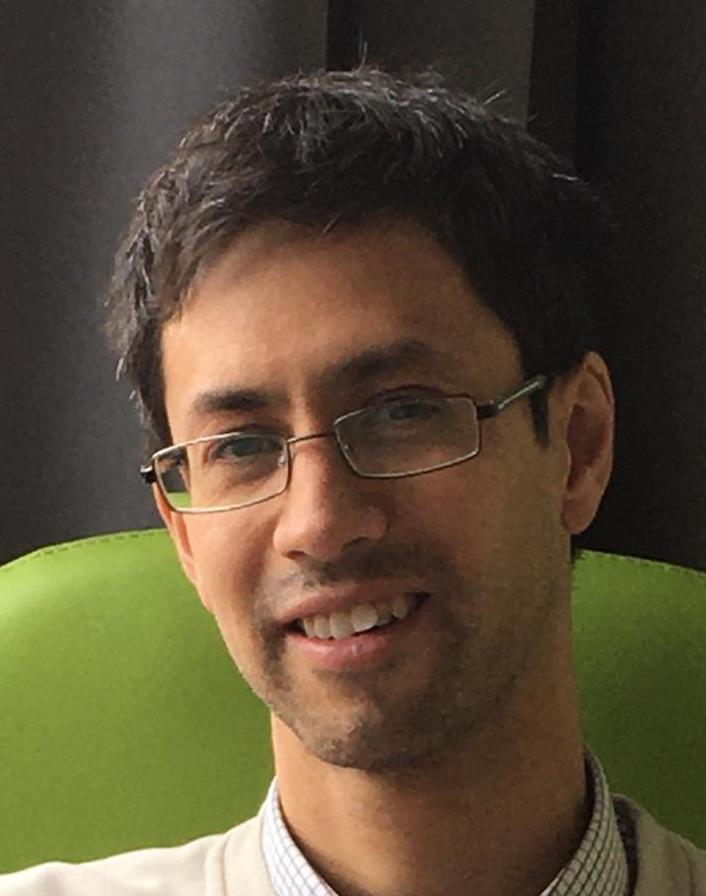

Marco Zambon
I am a professor at KU Leuven in the mathematics department (member of the
geometry section).
I work on differential/symplectic geometry and Lie theory.

Contact:
Email: marco.zambon AT kuleuven.be
Mailing address:
Departement of Mathematics,
Celestijnenlaan 200B,
B-3001 Leuven (Heverlee), Belgium
Office: 2.35
Click for directions.
My internal KU Leuven website.
Research:
My research interests are centered on Poisson geometry and include singular foliation theory, (multi)symplectic geometry, deformation theory, Lie groupoids, Dirac geometry, super-geometry, L-infinity algebras.
- Publications (with links)
- Slides and videos of talks I gave
- My C.V. (with publication list)
Grants and projects:
- Methusalem Project Pure Mathematics at KU Leuven.
- EoS project:
Beyond Symplectic Geometry.
- FWO research project: Stability and singular foliations.
- Some previous projects.
Advising:
- List of current and former students/postdocs, with links to their theses.
- Current postdocs:
Zan Grad,
Luka Zwaan,
Miquel Cueca Ten.
- Current Ph.D. students:
Tom Ariel (co-supervised with Roberto Rubio),
Nicolas Tribouillard.
- Current Master students: Jo Heynen.
- List of Master thesis topics offered by the Geometry Section.
Teaching:
- In the fall semester 2025 I am teaching
Wiskunde I (Bachelor program)
and
Differential geometry (Master program).
- In the spring semester 2026 I am teaching
Symplectic geometry (Master program).
- List of previous courses.
- List of minicourses.
Organizing:
- Geometry seminar.
- The informal Weekly Poisson Seminars.
- I am co-organizing the Poisson 2026 event, which includes the summer school
(Antwerpen, August 3-7) and
the conference (Leuven, August 10-14).
- List of conferences I co-organized.
Links:
Mathematical links
Postdoc and faculty job search links
Gmail
Toledo
KU Loket